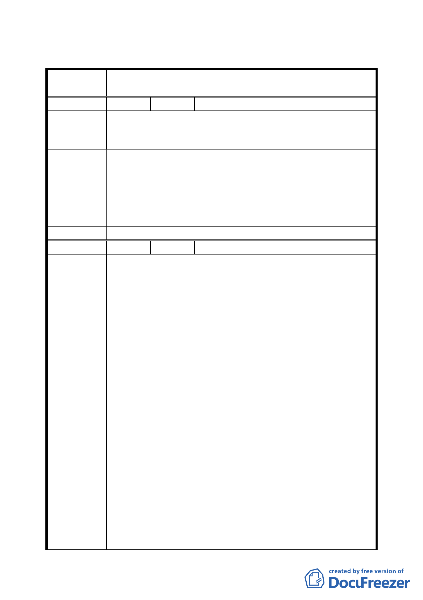

臺北市都市計畫委員會公民或團體所提意見綜理表
案
名
變更臺北市南港區南港路以南、縱貫鐵路以北南港輪胎工廠
及附近土地工業區為特定專用區主要計畫案
編 號 １ 陳情人 王勉
一、南港老人中心及圖書館現均在二樓以上，對老年人及殘
陳情理由
障人士多有不便。
二、南港區現無電影院，影響本區居民正常育樂。
一、請將老人中心及圖書館移至一樓，俾便老人及使用輪椅
建議辦法
殘障人員有權利使用。
二、南港自玉成戲院遭水災停用請利用此機會增設。
三、南港路部分交通標誌損壞已久，應儘速修理。
專案小組審 一、本建議內容建議納入區政建設參考。
查 結 論 二、交通標誌部分請交通局協助處理。
委員會決議 同專案小組審查結論。
編 號 ２ 陳情人 臺北市產業總工會
一、南港輪胎南港廠的員工概況
依據九十一年之「南港輪胎南港廠從業員平均年齡統計
表」，目前平均年齡男性勞工約為 43.4 歲，女性勞工約為
44.5 歲，平均年齡為 43.6 歲，大都為中高年齡勞工，員
工教育程度為高中職者佔 32.5%、國中小者為 56.2%，為
低學歷之就業者，全廠三百餘人平均服務年資高達 16.1
年，為傳統產業、退休邊緣之基層勞工。
二、開發土地之所有權移轉問題，值得關切
南港輪胎公司為趕搭政府土增稅減半之最後列車，將南港
輪胎土地轉讓其子公司南榮資產管理公司，預估經由此節
稅動作，南港每股淨值可提升 3.08 元，共計節稅八億元。
陳 情 理 由 如果媒體所言不假，本土地目前持有人應為「南榮資產管
理公司」，而非「南港輪胎公司」，然本開發案仍由「南港
輪胎股份有限公司」申請，即便「南榮資產管理公司」為
「南港輪胎公司」完全持股，二者仍為完全獨立之法人團
體，實有必要釐清對於本開發案之申請人是否有疏誤之
虞？
三、主要計畫書背離市長承諾「土地開發勞工權益保護自治
條例」精神為保障勞工權益、保留具勞動歷史文化之記
憶，台北市產業總工會曾於九十一年十月八日「市長與工
會幹部座談會」中提案建議本市都市開發審核土地變更程
序中，應明確規範開發單位對於勞工工作權、失業問題及
相關勞工權益應有完善計畫，經 馬市長同意研訂「台北
一八